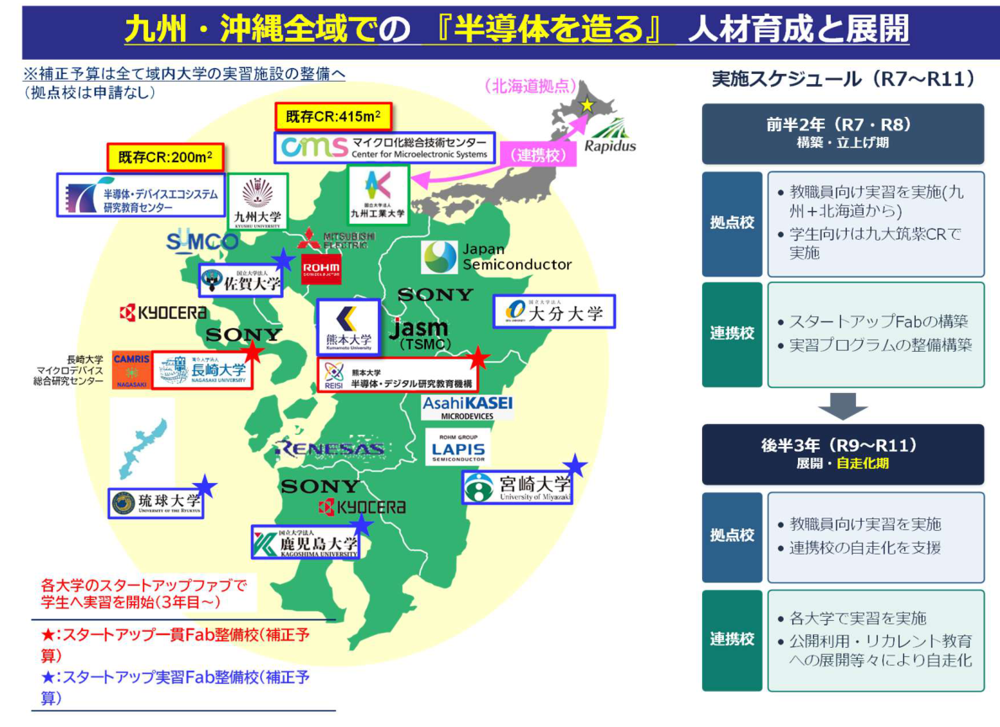
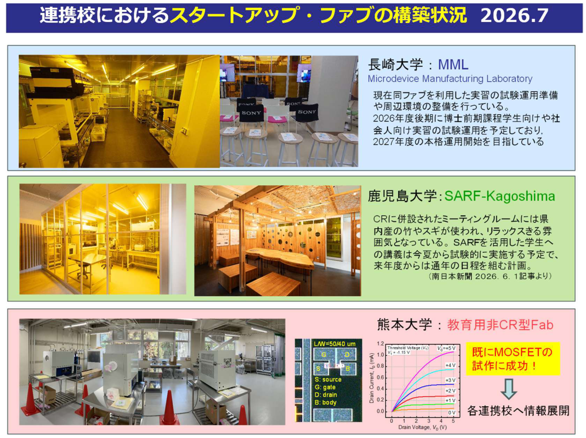
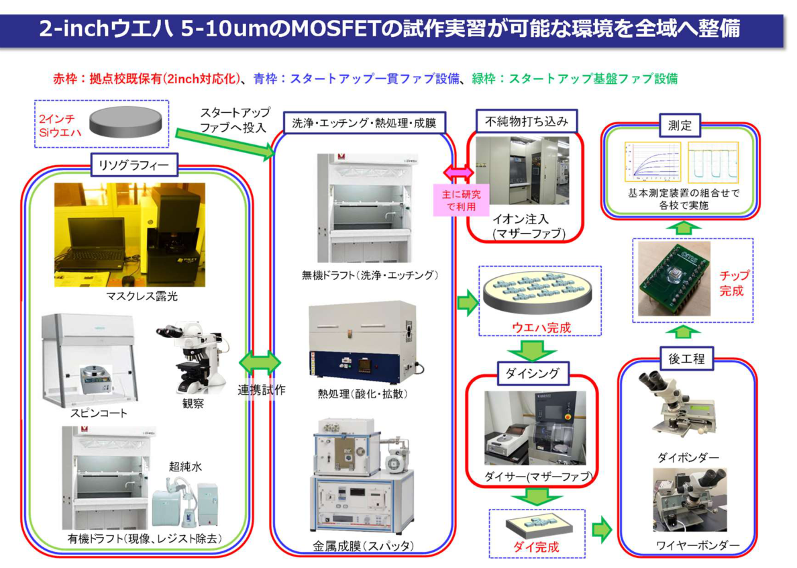
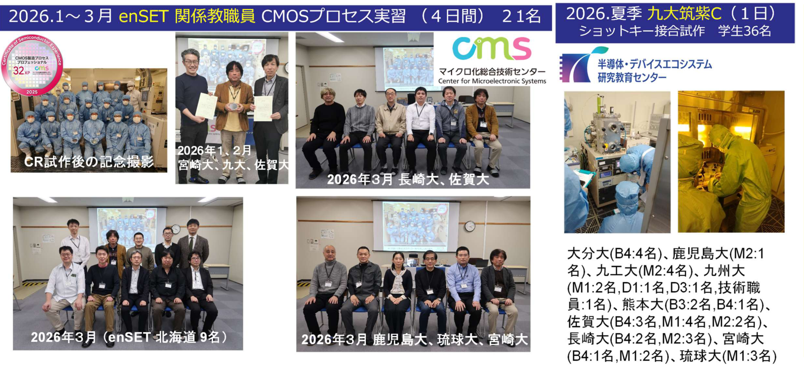

SEMICONDUCTOR CORE TALENT
半導体技術を支え、発展させる
半導体コア人材
設計から試作、評価まで。半導体を「つくる」経験を通じて、技術全体を見渡し、半導体産業を支える人材を育成します。
共同拠点校九州工業大学
九州・沖縄の実習ネットワーク
九州工業大学マイクロ化総合技術センターを拠点に、九州・沖縄の8大学と連携し、MOS集積回路を試作できる実習施設「スタートアップファブ」を整備。設計から試作・評価まで一貫して学べる、半導体ものづくり教育のネットワーク構築を進めます。各半導体コンソーシアムや地域産業界とも連携し、大学の研究力と社会実装力の強化を目指します。
地域に広がる実習環境
九州・沖縄の大学が連携し、長崎大学・鹿児島大学・熊本大学などで実習施設の整備を進めます。前半2年（2025・2026年度）は拠点校での実習と連携校の施設・プログラムを整備し、後半3年（2027〜2029年度）には各大学での実習や公開利用などへ展開します。


一貫実習と試作設備
回路設計から試作、評価まで。半導体のものづくりを一貫して学ぶ実習を、九州・沖縄の大学へ広げていきます。拠点校では教職員向けに4インチ・1μm CMOS集積回路実習を、連携校では大学院生向けに2インチ・5μm MOSFET基本回路実習を行います。
2インチウエハー上に5〜10μmのMOSFETを試作できる環境を整備し、リソグラフィー、洗浄・熱処理・成膜、測定、後工程などの設備を活用します。


実習の成果
2026年10月時点で、連携校6大学におけるMOS試作が可能な施設の構築は、2025〜2026年度にほぼ完了しました。九州工業大学では九州・北海道の教職員向け指導者育成実習を、九州大学筑紫キャンパスでは九州・沖縄の大学院生向けデバイス実習を実施しました。2026年1〜3月の教職員向けCMOSプロセス実習は4日間で21名、2026年夏の九州大学筑紫キャンパスでのショットキー接合試作は1日で学生36名が参加しました。
